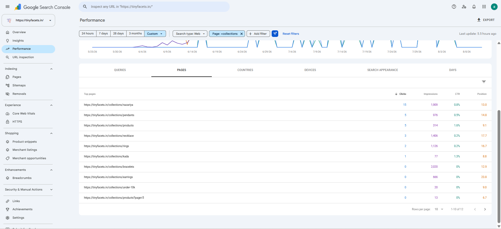
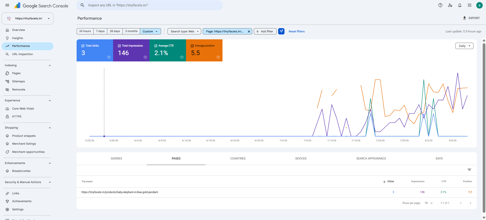
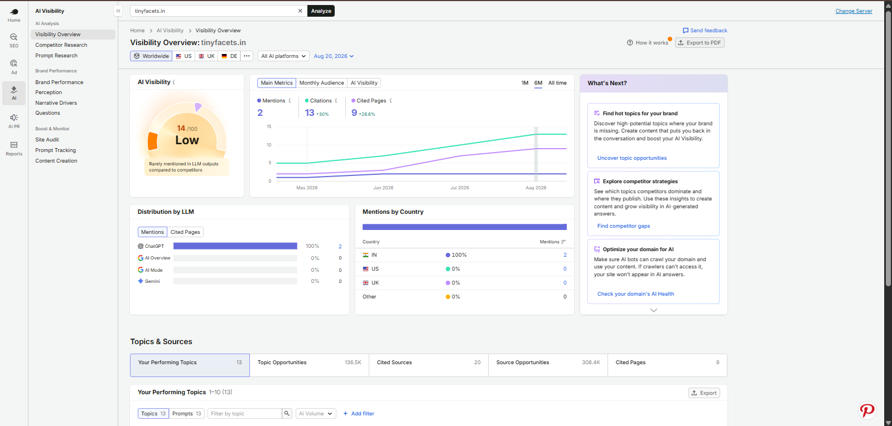
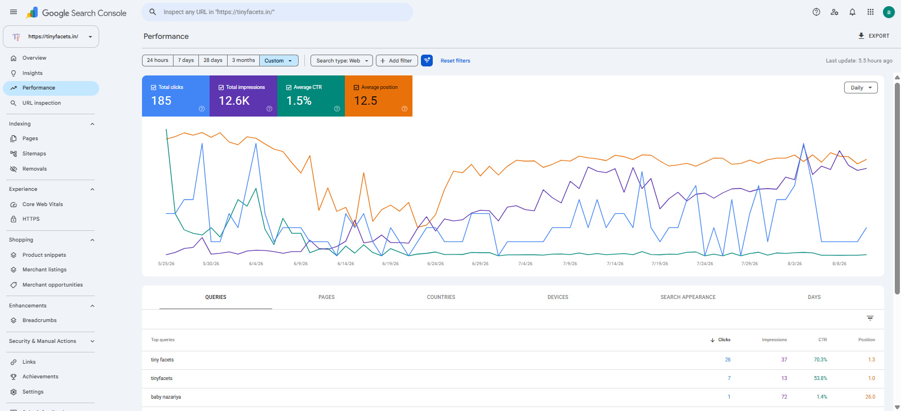
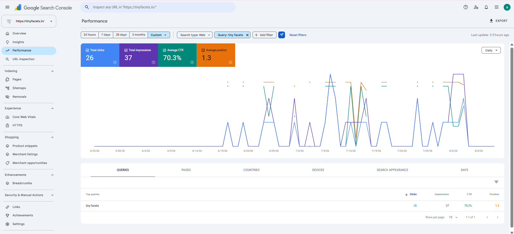
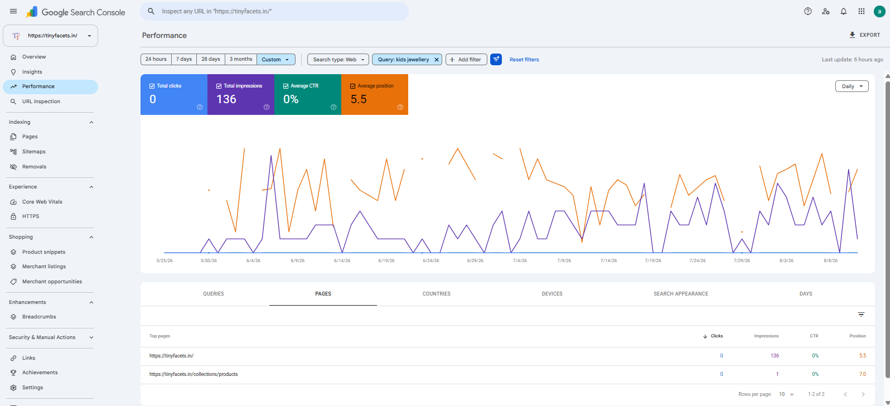
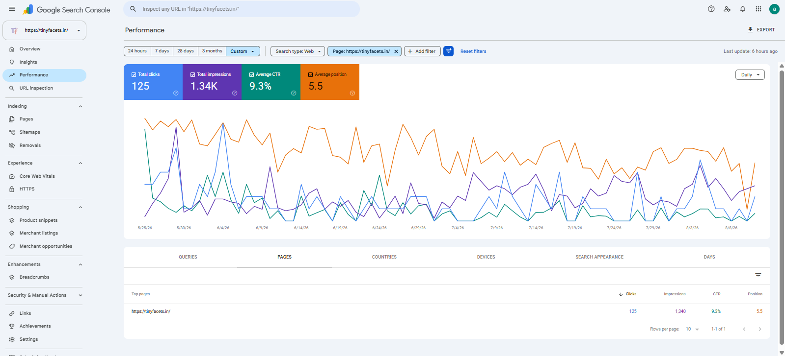
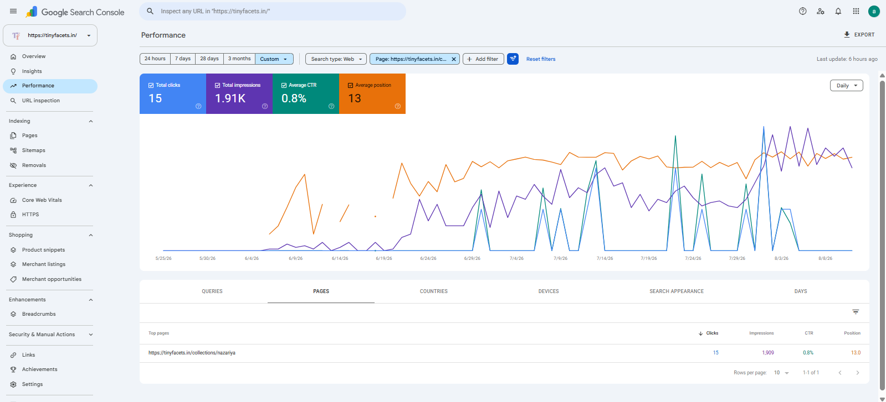
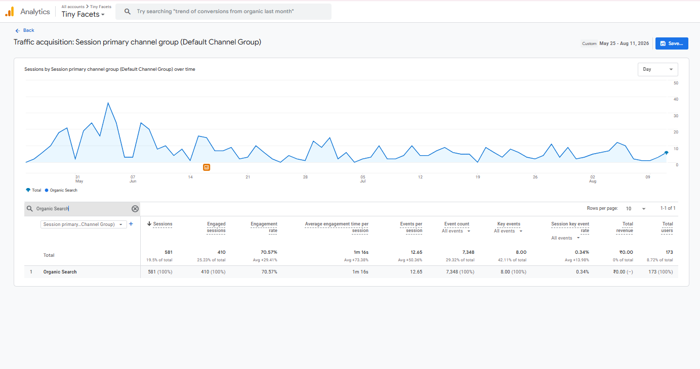

The Starting Point
Tinyfacets was not a website with damaged SEO. It was a website with almost no SEO history at all. The domain had just launched, which meant there was:
- No established domain authority
- No ranking history
- Almost no backlink profile
- No meaningful brand-search history
- No historical Google Search Console data
- No established topical authority
At the same time, the website already contained dozens of products and several important commercial collections. The challenge was making sure those pages did not remain simple Shopify product listings. They needed:
The Initial SEO Problems
Although the website was new, there were still several important areas that needed to be established or improved.
Technical SEO
The initial technical work included areas such as:
- Crawling
- Indexing
- XML sitemap
- Robots.txt
- Redirects
- Mobile usability
- Page speed
- Heading hierarchy
- Generic Shopify structured data
- Filter-related issues
- Favicon issues
- Template limitations
Because the site had only recently launched, the objective was to solve these issues before they became larger problems as more products and content were added.
On-Page SEO
Commercial pages needed clearer search targeting. The main opportunities included:
- Homepage keyword targeting
- Collection-page optimization
- Product naming
- Product descriptions
- Metadata
- Heading structures
- Image alt text
- Internal linking
- Keyword differentiation across similar products
Without this structure, dozens of similar jewellery products could easily begin competing against one another for the same terms.
Content
The website also needed an informational search layer. There was no large existing blog library to clean up or optimize. The challenge was deciding: What content should Tinyfacets publish first? Rather than producing random jewellery articles, the strategy needed to support:
- Parent questions
- Buying decisions
- Gifting intent
- Product discovery
- Commercial collections
- Long-tail search opportunities
This gave the content program a clear purpose from the beginning.
Off-Page SEO
As a fresh domain, Tinyfacets had almost no backlink profile. That meant authority building needed to begin gradually. The objective at this stage was not to chase a large backlink count. It was to establish the first relevant external signals while the website developed its own search footprint.
My Role
Tinyfacets became the first SEO project where I was independently responsible for SEO from the beginning. My responsibilities include:
- SEO strategy
- Technical audits
- Keyword research
- Competitor research
- Homepage optimization
- Collection SEO
- Product SEO
- Content planning
- Blog briefs
- Internal linking
- Local SEO
- AI search optimization
- Developer recommendations
- Content approvals
- UX recommendations
- Monthly SEO reporting
I work with a developer and content writer while leading SEO strategy and deciding which opportunities should be prioritized. I own the SEO process from research and planning through implementation coordination, monitoring, and ongoing improvement.
Starting With the Technical Foundation
Because Tinyfacets was a brand-new domain, I wanted the technical foundation to be correct before scaling content. The initial sequence was:
- Crawlability
- Indexability
- Sitemap configuration
- Robots.txt
- Redirects
- Mobile usability
- Site speed
- Structured data
- Heading hierarchy
- Shopify-specific technical issues
The objective was not to overengineer a new website. It was to ensure that the pages we planned to optimize and create had a clean enough foundation to be crawled, understood, and indexed. Once that foundation was in place, I moved into keyword research, commercial-page optimization, internal linking, and content development.
Understanding the Kids Jewellery Search Market
Tinyfacets had almost no historical first-party search data when SEO began. That made competitor and SERP research especially important. I studied established jewellery brands and websites with relevant kids jewellery offerings, including:
- BlueStone
- Tanishq
- Joyalukkas
- WHP Jewellers
- Doodles by Purvi
- Vaibhav Jewellers
I analyzed:
- Collection architecture
- Keyword targeting
- Product naming
- Product descriptions
- Metadata
- Content depth
- Blog topics
- Internal linking
The purpose was not to copy competitor websites. It was to understand how parents search for children's jewellery and identify areas where Tinyfacets could build more focused commercial and informational pages. The research helped identify opportunities around:
- Better collection targeting
- More specific product keywords
- Stronger product descriptions
- Parent-focused educational content
- New commercial collections
- Better internal discovery
Building the Keyword Strategy From Zero
Because historical Google Search Console data was not yet useful, keyword research relied on:
- Semrush
- Ubersuggest
- Google SERPs
- Google Trends
- Competitor research
- Search intent
The primary commercial direction became:
- Gold Jewellery for Kids
From there, individual commercial areas received more specific keyword targets. Examples included:
- Gold Bracelets for Kids
- Kids Gold Earrings
- Kids Nazariya Bracelet
- Kids Gold Necklace
- Kids Gold Pendant
- Kids Gold Rings
This established a simple search hierarchy.
Homepage
Broader kids gold jewellery intent
Collections
Specific jewellery-category intent
Products
Longer and more design-specific search terms
Blogs
Informational, gifting, sizing, and buying questions
Repositioning the Homepage Around Search Intent
The homepage needed to do more than introduce Tinyfacets as a brand. It also needed to establish what the website represented in search. One of the important experiments was moving the main H1 toward:
Gold Jewellery for Kids, Made for Little Gifts
The objective was to bring the site's primary commercial topic directly into the main brand message without making the homepage feel like keyword-stuffed SEO copy. The homepage was optimized around:
- Primary keyword relevance
- Heading hierarchy
- Collection discovery
- Internal linking
- Product relevance
- FAQs
- Trust signals
- Metadata
The wider principle became:
Preventing Keyword Cannibalization
Product catalogues create a different keyword challenge from service websites. Tinyfacets contains many designs within the same jewellery categories. If every earring page targeted: kids gold earrings or every bracelet targeted: gold bracelet for kids dozens of product URLs could begin competing for the same broad terms. Instead, product keyword targeting was expanded using:
- Jewellery type
- Design
- Motif
- Boys or girls intent where relevant
- Collection secondary keywords
- Long-tail variations
Examples include:
Double Cherry Gold Stud Earrings for Girls
and:
Three Little Hearts Gold Nazariya Bracelet
This helped preserve broader commercial terms for collection pages while giving individual product pages more specific search intent.
Turning Collections Into Search Landing Pages
Collections became one of the most important parts of the strategy. At launch, these pages were primarily product listings. I expanded them into more complete commercial search destinations built around:
- H1
- Product Grid
- Buying Information
- Related Collections
- Contextual Internal Links
- FAQs
- Keyword targeting
- H1 and H2 structure
- Collection content
- Meta title
- Meta description
- FAQs
- Internal linking
- Image SEO
- Schema recommendations
Technical implementation such as structured data was coordinated with the developer. So far, approximately:
8 Collection Pages
have been optimized. The live Rings and Nazariya collections now include substantial supporting content, buying information, related jewellery discovery, and FAQs rather than existing only as grids of products.
Creating New Collections From Search Opportunities
SEO did not only influence how existing pages were optimized. It also influenced which commercial pages could be created. One example was:
Kids Gold Jewellery Under 10K
Instead of allowing website architecture to be driven only by internal catalogue organization, search demand could also identify useful buying-focused collection opportunities. The principle became:
Early Collection Visibility
Collections quickly became some of Tinyfacets' strongest non-branded search assets.
One early example was:
Kids Nazariya Collection
Clicks
15
Impressions
1,909
CTR
0.8%
Average Position
13.0
Other collections also began building visibility.
- Bracelets: 2,020 impressions, 12.9 average position
- Necklace: 1,406 impressions, 17.7 average position
- Pendants: 976 impressions, 14.8 average position
- Rings: 1,126 impressions, 16.7 average position
- Earrings: 666 impressions, 23.8 average position
For a website only a few months into SEO, the important signal was not simply click volume. Multiple commercial collections were already being discovered and tested across relevant search queries.

Optimizing Product Pages at Scale
Product SEO became another major part of the initial search foundation. I have personally optimized approximately:
80 Product Pages
The process includes:
- SEO-focused product naming
- H1 optimization
- Product descriptions
- Meta titles
- Meta descriptions
- Image alt text
- Internal linking
- Related collections
- Structured data recommendations
- Keyword differentiation
Because many products share similar jewellery types and design characteristics, product naming became particularly important. Each URL needed enough differentiation for shoppers and search engines to understand why the page existed.
Early Product SEO Win
One product that gained early search visibility was:
Baby Elephant in Blue Gold Pendant
Clicks
3
Impressions
146
CTR
2.1%
Average Position
5.5
For a product page on a completely new domain, this was a useful early search signal. The product still exists in the live Tinyfacets catalogue under that name.

Building the Content Strategy
Blogging was not treated as an independent traffic activity. The content strategy was designed to support the commercial SEO ecosystem. Initial topic selection focused on:
- Search demand
- Lower-competition opportunities
- Parent questions
- Buying concerns
- Gifting searches
- Size guidance
- Commercial collection support
Rather than asking: What jewellery article should we publish this week? the strategy asked: What question can we answer that also strengthens Tinyfacets' relevance around children's gold jewellery?
Building the First Content Cluster
The first major cluster focused on helping parents choose, buy, size, and gift jewellery for children. Topics included:
- Gold Jewellery for Kids: Complete Buying & Gifting Guide for Parents
- Gold Earrings for Baby Girl: What Parents Should Check Before Buying
- Baby Gold Ring Size Guide: Comfort, Fit and Gifting Tips
- Gold Kada for Baby Boy: A Simple Buying Guide for Parents
- Gold Pendant for Baby: Cute Designs and Gifting Ideas
- Black Beads Bracelet for Baby: Meaning, Style and Buying Tips
- Baby Gold Bracelet Size Guide: How to Choose the Right Fit
- Kids Gold Earrings Designs: Studs, Motifs and Daily Wear Styles
- Kids Gold Necklace Length Guide: How to Choose the Right Fit
- Kids Jewellery Online Buying Guide: What Parents Should Check First
- Gold Pendant Birthday Gift for Kids: Designs Parents Can Choose
Each topic connected to either: A Search Problem or: A Commercial Category and often both. This gave Tinyfacets the beginning of a more deliberate topical content architecture rather than an unrelated collection of blog posts.
Early Blog Performance
Only around:
5 Blogs
were live during the measured period. They had already begun receiving search impressions.
One early example was:
Gold Jewellery for Kids: Complete Buying & Gifting Guide for Parents
Clicks
3
Impressions
190
CTR
1.6%
Average Position
8.4
This article was particularly useful because it supported Tinyfacets' broadest commercial search topic while satisfying informational intent.
Building a Strong Internal Linking Structure
Unlike older projects where internal linking needed to be repaired later, Tinyfacets gave me the opportunity to build the structure early. The internal-linking model became:
Homepage
Collections
Products
Blogs
Improving Indexing
Even on a new website, not every page entered Google's index immediately. Some URLs appeared under:
- Crawled, currently not indexed
- Discovered, currently not indexed
- Page content
- Keyword targeting
- Internal linking
- Page relationships
- Overall usefulness
As these signals improved, index coverage also improved. The website reached approximately:
122 Indexed Pages
For a new ecommerce catalogue, getting products, collections, and informational content consistently discovered became an important early milestone.
Shopify Technical SEO
Tinyfacets also presented several Shopify-specific technical considerations. These included:
- Heading hierarchy
- Generic structured data
- Filter-related issues
- Favicon issues
- Template limitations
Shopify's default structured data was reviewed and expanded where necessary. Schema recommendations included:
Homepage
- Organization
- WebSite
- FAQ where relevant
Collection Pages
- Collection-related structured data
- ItemList
- FAQ where relevant
Product Pages
- Product structured data
Implementation was coordinated with the developer.
Building Trust Into the SEO Strategy
Kids gold jewellery is a trust-sensitive purchase. Parents are not only evaluating a design. They are also asking:
- What gold is being used?
- Is the jewellery hallmarked?
- Is it comfortable for children?
- Who operates the brand?
- What are the policies?
- What happens after purchase?
Important website information was therefore reviewed around:
- BIS Hallmark information
- Brand story
- Founder information
- Business information
- Product information
- Policies
- FAQs
- Reviews
These elements helped strengthen both customer confidence and the clarity of Tinyfacets as a business/entity. The live website now prominently presents BIS hallmarked gold, kid-friendly and lightweight design positioning, gifting use cases, business details, FAQs, policies, and clear operating-business information.
Improving Local SEO
Although Tinyfacets primarily operates as an ecommerce brand, Local SEO was included in the initial foundation. I helped build and maintain the Google Business Profile and ensured that it received regular updates. As branded search activity developed, the business profile also began appearing more consistently for relevant branded searches. Local SEO remains an ongoing area rather than a completed campaign at this early stage.
Building Authority for a New Domain
Tinyfacets began with virtually no backlink profile. Off-page SEO is therefore still in the foundation stage. Approximately:
5–7 Initial Backlinks
have been built, including links from relevant properties within the wider business ecosystem. The early anchor strategy primarily supported:
- Homepage relevance
- Brand establishment
- Core commercial positioning
The objective at this stage is not backlink volume. It is to create the site's first relevant authority signals while the domain builds its own search history.
Preparing Tinyfacets for AI Search
AI-search accessibility was considered from the beginning rather than being added later.
The strategy includes:
- AI crawler access
- Structured data
- FAQs
- Clear answer-focused content
- Entity information
- Informational content
- Brand mentions
- Citations
According to the third-party Semrush AI Visibility reporting provided for the project:
- 2 AI Mentions
- 13 AI Citations
- 9 Cited Pages
- AI Visibility Score: 14/100 (Low)
These are third-party AI visibility figures rather than Google Search Console measurements. For a domain only a few months old, I treat them as early signs of visibility rather than mature AI-search performance.

Overall SEO Results
Tinyfacets does not yet have years of historical performance data. That is exactly what makes the project different.
Within approximately the first two months, Google Search Console recorded:
Organic Clicks
185
Search Impressions
12.6K
CTR
1.5%
Average Position
12.5
Additional SEO Footprint
- 122 Indexed Pages
- 868 Ranking Keywords Reported
More importantly, search visibility has begun expanding beyond branded queries into broader commercial searches.

Establishing the Brand Query
For:
“tiny facets”
Google Search Console recorded:
Clicks
26
Impressions
37
CTR
70.3%
Average Position
1.3
This showed that the website established clear visibility for its primary brand search relatively early.

Building Non-Branded Visibility
The more important long-term objective is helping Tinyfacets reach people who have never searched for the brand before.
One useful early example was:
“kids jewellery”
Clicks
0
Impressions
136
CTR
0%
Average Position
5.5
This query had not yet generated clicks, so I treat it as early non-branded visibility rather than a mature traffic win. What makes it useful is that a new domain was already being tested around a broad kids jewellery category term.
This suggested that Google was beginning to associate Tinyfacets with the wider kids jewellery market rather than only with its brand name.

Homepage Performance
The homepage became the strongest page during the initial period.
Clicks
125
Impressions
1.34K
CTR
9.3%
Average Position
5.5
The results include branded visibility, but they also reflect the broader commercial direction created through the homepage rewrite and site architecture.

Collection Search Growth
Commercial collections also began building their own search footprint.
The strongest early example was:
Kids Nazariya Collection
Clicks
15
Impressions
1,909
CTR
0.8%
Average Position
13.0
The live collection today contains products plus substantial supporting information around kids nazariya bracelets, meaning, buying context, and related discovery.
This was important because it demonstrated that Tinyfacets' search footprint was not being created only by the homepage. Commercial category pages were beginning to develop their own visibility.

Product and Content Visibility
The early search footprint also extended beyond homepage and collections.
Product Example
Baby Elephant in Blue Gold Pendant 3 clicks 156 impressions 5.5 average position
Blog Example
Gold Jewellery for Kids: Complete Buying & Gifting Guide for Parents 3 clicks 199 impressions 8.5 average position These numbers are still small. That is expected. The important part is that multiple page types were already beginning to participate in search:
Business Impact
Organic search has also contributed to improving conversions and sales. However, commercial performance figures are confidential and are intentionally not included in this portfolio.
Proof of Work
The portfolio version places first-party and third-party evidence directly beside the relevant claims throughout the case study.
Overall Search Footprint
Google Search Console
185 clicks · 12.6K impressions · 1.5% CTR · 12.5 average position
Homepage Performance
Google Search Console
125 clicks · 1.34K impressions · 9.3% CTR · 5.5 average position
Brand Search
Google Search Console
“tiny facets” · 26 clicks · 37 impressions · 70.3% CTR · 1.3 average position
Non-Branded Visibility
Google Search Console
“kids jewellery” · 0 clicks · 136 impressions · 5.5 average position
Collection Visibility
Google Search Console
Kids Nazariya collection · 15 clicks · 1,909 impressions · 13.0 average position
Product Visibility
Google Search Console
Baby Elephant in Blue Gold Pendant · 3 clicks · 146 impressions · 5.5 average position
Blog Visibility
Google Search Console
Gold Jewellery for Kids buying guide · 3 clicks · 190 impressions · 8.4 average position
Organic Traffic
Google Analytics 4
581 Organic Search sessions · 410 engaged sessions · 70.57% engagement rate · 1m 16s average engagement time per session · 173 users

AI Search Visibility
Semrush AI Visibility
2 mentions · 13 citations · 9 cited pages · AI Visibility score 14/100 (Low)
This makes the early-stage SEO story directly verifiable rather than relying only on written claims.
Tools & Platforms Used
- Google Search Console
- Google Analytics
- Semrush
- Ubersuggest
- Screaming Frog
- PageSpeed Insights
- Google Trends
- Google Rich Results Test
- Google Business Profile
- Shopify
The Most Difficult Part
The hardest part of Tinyfacets was not fixing one large technical issue. It was making dozens of early SEO decisions correctly while the website had almost no historical data. There was no established Search Console dataset showing exactly what worked. There was no old keyword map. There was no mature internal-link architecture. There was no existing content strategy. There was very little authority. That meant several decisions had to be made through:
- Competitor research
- SERP analysis
- Search intent
- Keyword tools
- Ecommerce logic
- User needs
The challenge was building a structure that could scale instead of creating SEO problems that would need to be repaired later.
What I Learned
Tinyfacets reinforced a different lesson from projects where SEO was introduced much later.
Starting SEO early is significantly easier than repairing years of poor decisions.
Because SEO was involved immediately after launch, I could think about:
My Biggest Takeaway
Tinyfacets is particularly meaningful because it is the first SEO project I independently owned from the beginning. I did not inherit another SEO person's keyword map. I did not inherit their content structure. I did not inherit their internal-linking architecture. I did not inherit their technical SEO plan. Those systems had to be created. The website is still early in its organic growth journey, so this case study is not about pretending that two months of SEO represents a finished success story. It demonstrates what a strong start can look like: A new domain that is indexed, gaining non-branded visibility, building commercial rankings, creating topical content, and developing the search foundation required for long-term organic growth. For me, this project demonstrates that I can: Take a fresh website, build its SEO foundation end to end, coordinate execution across development and content, and turn a domain with no search history into one that is beginning to compete for meaningful organic searches.